畫家教學
如何加入 Arch 成為畫家
加入免費、不抽成。用 Google 帳號登入，填好資料、放上 1–9 件作品，送出審核，通過後你的畫家頁就會公開。整個過程在手機上就能完成，資料可以先存草稿慢慢填。
截圖裡用黃框框起來的，就是要按或要填的地方。
第一部分
加入平台：從申請到作品上架
先準備好 1–9 張作品照片，會填得更快。
-
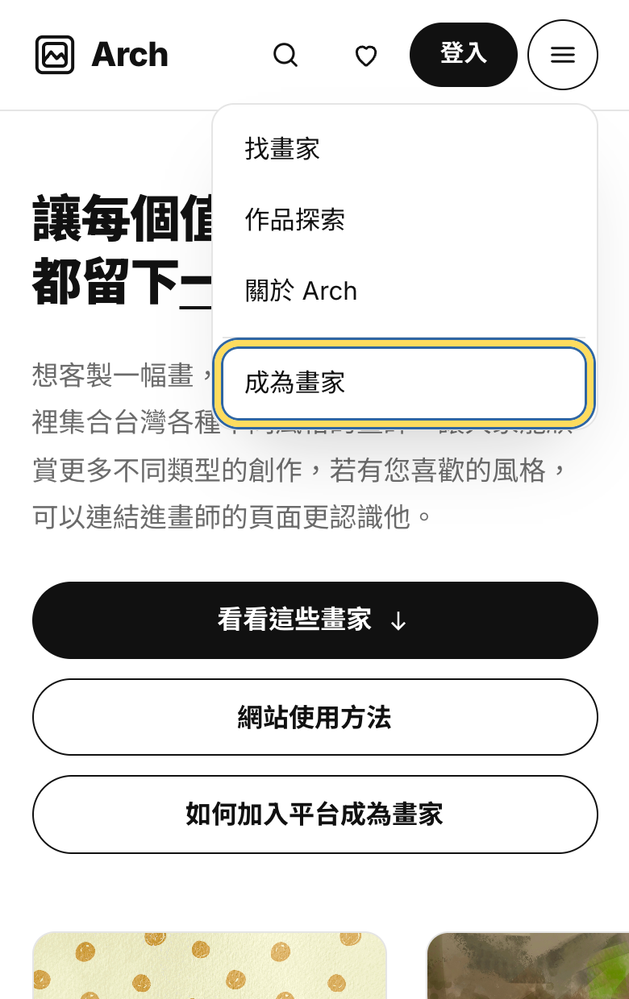
-
勾選原創聲明，按「下一步：填寫畫家資料」
「你從哪裡知道 Arch？」可以不選。
一定要勾「我確認上傳的作品都是我本人的原創作品，並同意作品與資料公開展示在 Arch」，才能繼續。
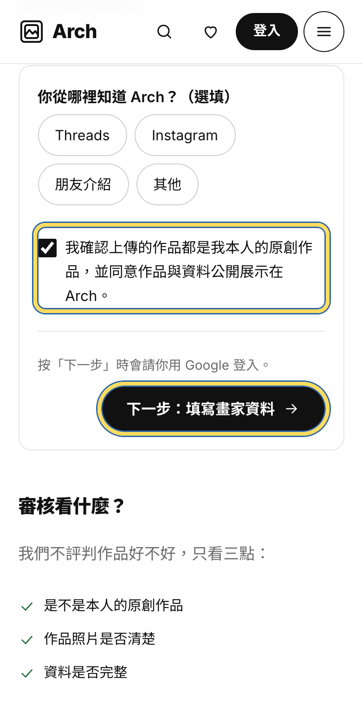
-
用 Google 帳號登入
會跳出「先登入再繼續」，按「使用 Google 帳號登入」，再選你要用的 Google 帳號。不用另外設定密碼。
登入完會自動回到網站，直接進入「畫家後台」。這時你的畫家頁是草稿，別人還看不到。
小提醒之後都要用同一個 Google 帳號登入，才能管理你的畫家頁。
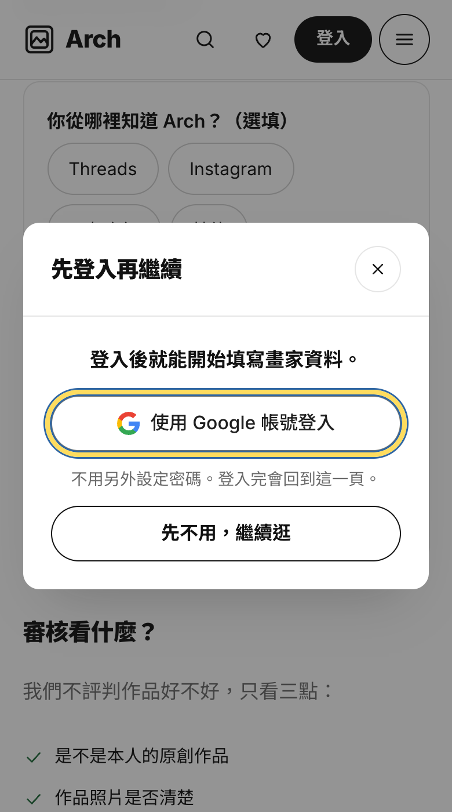
-
填寫畫家資料
有紅色星號的兩格一定要填：
- 姓名或藝名：會先帶入你的 Google 名字，可以改。
- 畫家頁網址：只能用英文小寫、數字和 -，例如 lin-tsai-wei。這會是你專屬的畫家頁網址。
其他都是選填，但寫得越完整，收藏家越容易認識你：頭像或工作照、一句話介紹（20 字內）、創作故事、風格標籤（1–5 個，用逗號分開）、公開 Email、Instagram 帳號、是否接受客製委託與客製說明。
建議公開 Email 和 Instagram 至少填一個。收藏家是按畫家頁上的 Email 或 Instagram 按鈕來聯絡你的。
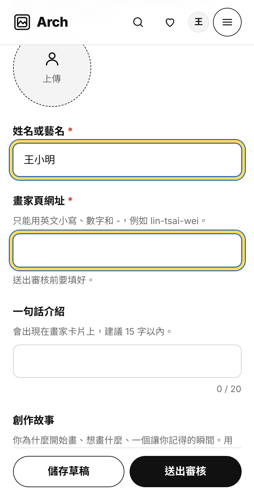
-
按「新增作品」
往下滑到「作品」，按「新增作品」。可以放 1–9 件，第一件會當作封面。
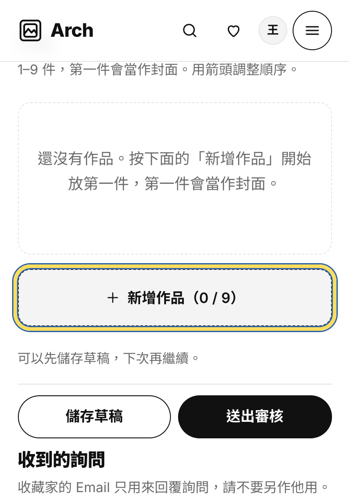
-
上傳作品照片，填作品資料
點「點這裡上傳圖片」選照片（JPG、PNG 或 WebP，5MB 內；太大的照片網站會自動縮小）。
接著填：作品名稱、媒材（從選單選）、畫在什麼上、尺寸（cm）、年份、價格（可以填一個價格，或填範圍）、狀態（可購買／已售出／非賣品）、作品說明。
每件作品右上角的箭頭可以調整順序，垃圾桶是刪除。要放下一件，再按一次「新增作品」。
記得照片上傳後還要按最下面的「儲存草稿」或「送出審核」，才會真的存起來。
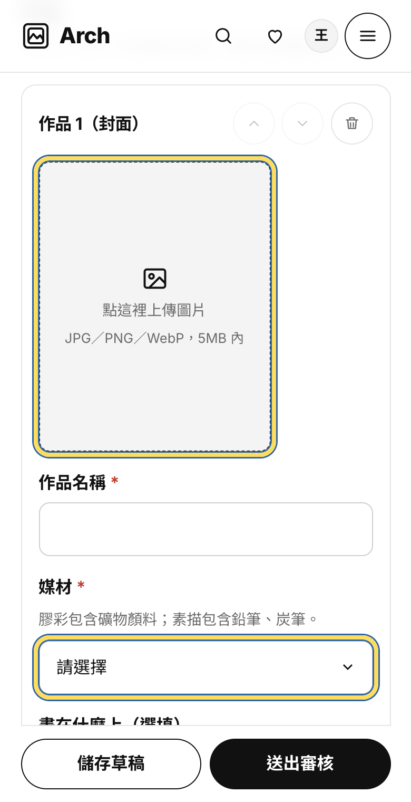
-
按「送出審核」
還沒填完可以先按「儲存草稿」，下次登入再繼續。
都填好了就按「送出審核」。送出前會檢查：姓名、畫家頁網址有填，至少 1 件作品，而且每件作品都有照片。少了哪一項，按鈕旁邊會用紅字告訴你。
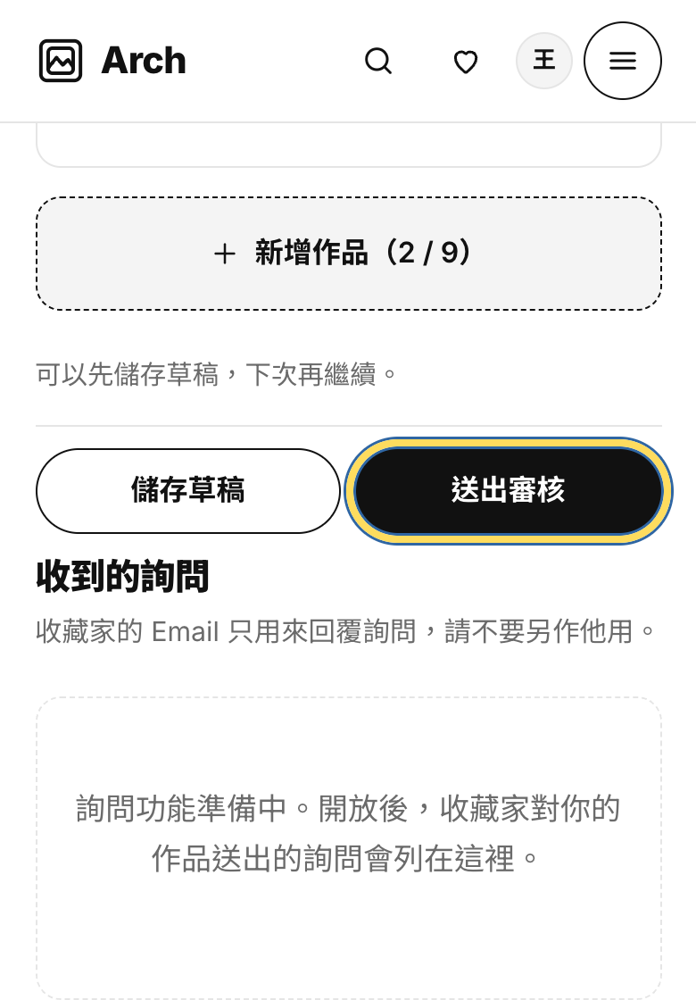
-
等待審核
畫家後台上方會顯示「審核中」。我們不評判作品好不好，只看三點：是不是本人的原創作品、作品照片是否清楚、資料是否完整。
審核期間還是可以修改，存檔後我們會看到最新的內容。
如果沒通過，上方會顯示「需要修改」和審核備註。照著備註改好，按「重新送出審核」就可以。
小提醒審核結果會顯示在畫家後台，記得回來登入看看。
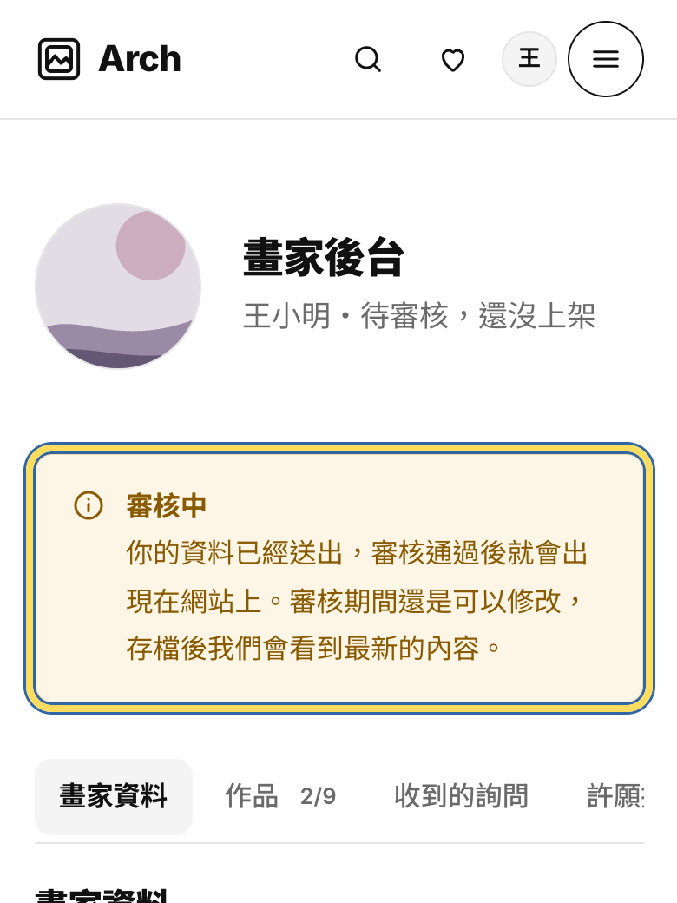
-
上架完成
審核通過後，畫家後台會顯示「已上架」，收藏家就能在「找畫家」和「作品探索」看到你。
按名字旁邊的「看我的公開頁面」，就能看到你的畫家頁，也可以把這個網址分享到 Instagram 或 Threads。
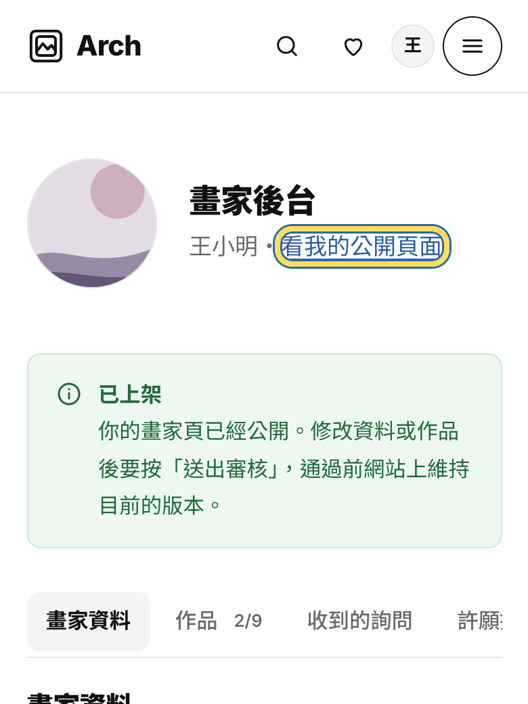
原本在 demo 的畫家
不用重新申請，用認領連結就好
如果你原本就在 Arch 的 demo 網站上，我們會私訊給你一個專屬的「認領連結」。
打開連結，確認上面是你的名字和作品，按「用 Google 登入並認領」。完成後會直接進入畫家後台，看到原本的資料和作品，上架狀態不變。之後用同一個 Google 帳號登入就能自己修改。
連結打不開或已經失效，請thread聯繫我！，我們確認後會再給你一次。
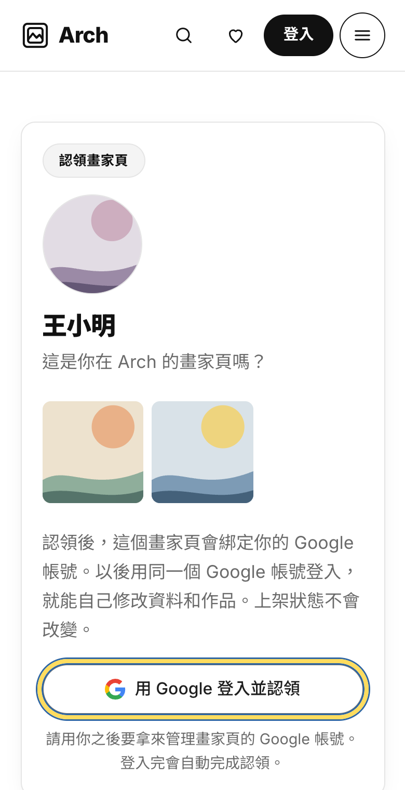
第二部分
上架後，怎麼修改自己的資料
資料和作品隨時都能改。改完要送出審核，通過前網站上會先維持原本的內容，不會出現改到一半的畫面。
-
登入，打開「畫家後台」
按右上角「登入」，用當初申請的 Google 帳號登入。
登入後點右上角的頭像，選「畫家後台」。
用電腦的話，頁面最下面「畫家」那一欄也有「畫家後台」。
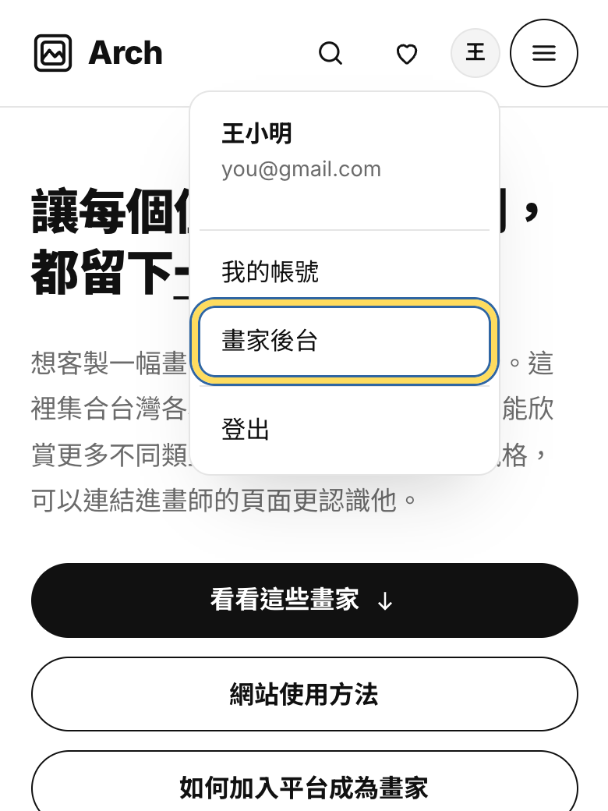
-
修改頭像與介紹
點頭像上的「換一張」換照片；按「拿掉頭像」會改用第一件作品當頭像。
姓名或藝名、畫家頁網址、一句話介紹、創作故事、風格標籤，都可以直接在欄位裡改。
注意畫家頁網址改了之後，之前分享出去的舊網址就打不開了，沒必要的話建議不要改。
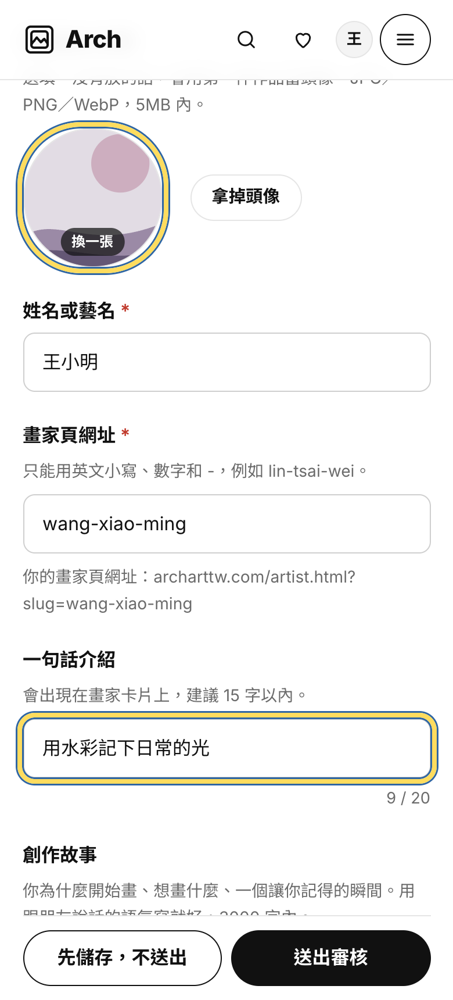
-
修改聯絡方式與客製設定
往下滑可以改：
- 公開 Email：會顯示在你的畫家頁，收藏家用這個信箱聯絡你。
- Instagram：只填帳號，例如 xiaoming.paints，不用貼整個網址。
- 是否接受客製委託和客製說明（80 字內，例如接受哪些題材、大約要多久）。
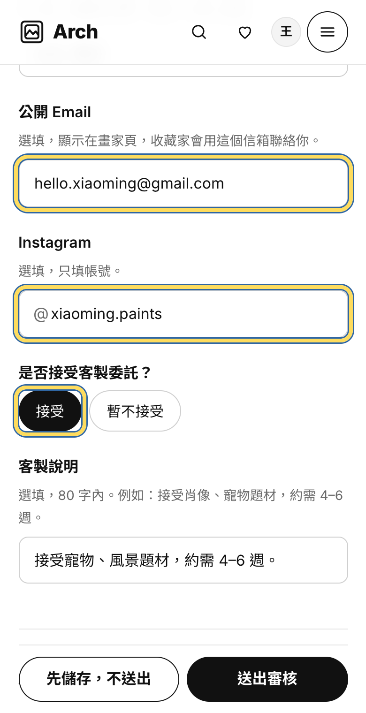
-
修改作品
- 換照片：點作品圖片上的「換一張」。
- 調整順序：按右上角的上、下箭頭，第一件是封面。
- 刪除：按垃圾桶。
- 加新作品：按「新增作品」，最多 9 件。
作品名稱、媒材、尺寸、價格、狀態都能改。例如作品賣掉了，把狀態改成「已售出」。
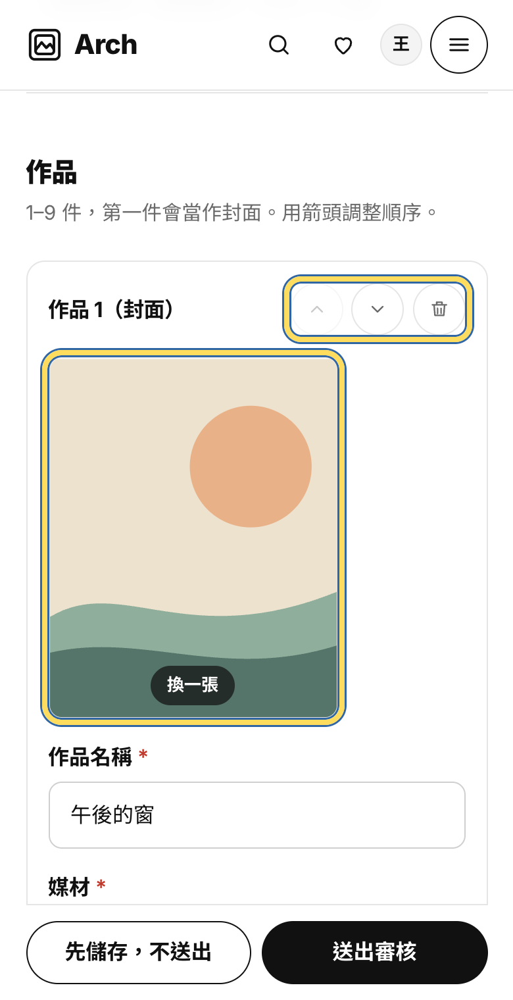
-
改好按「送出審核」
改完按最下面的「送出審核」。還沒改完可以先按「先儲存，不送出」，下次再繼續。
送出後網站上會先維持目前的版本，審核通過才會換成新的。
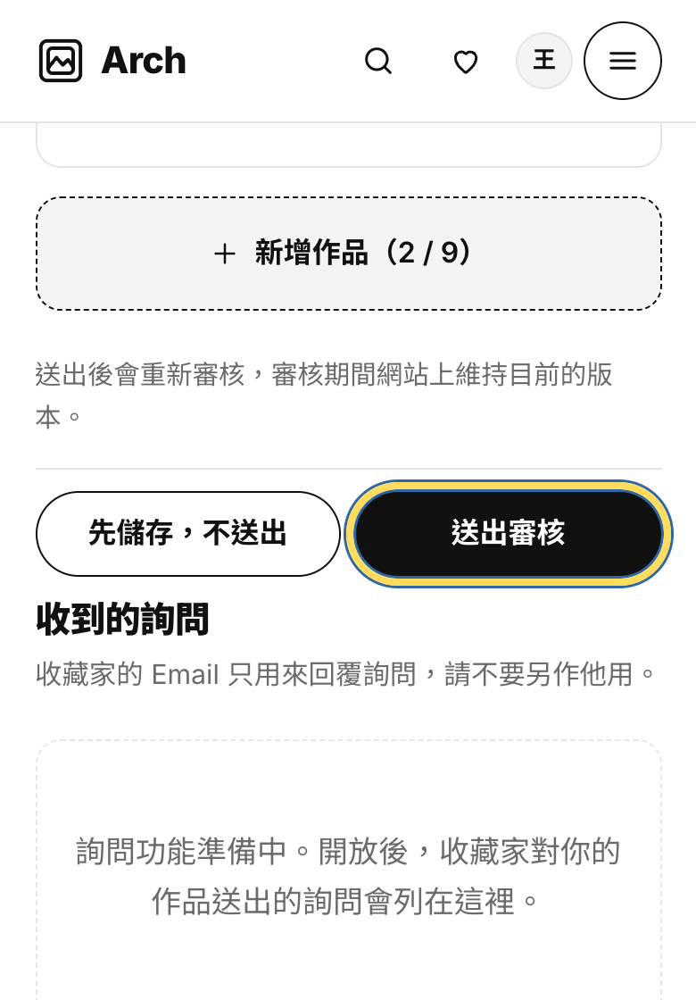
-
等修改審核通過
畫家後台上方會顯示「修改審核中」。這段時間還可以繼續改，存檔後我們會看到最新的內容。
不想改了，按「撤回並放棄這次修改」，就會回到網站上目前的版本。
如果修改沒通過，上方會顯示審核備註，可以照著調整後再送出，或放棄這次修改。
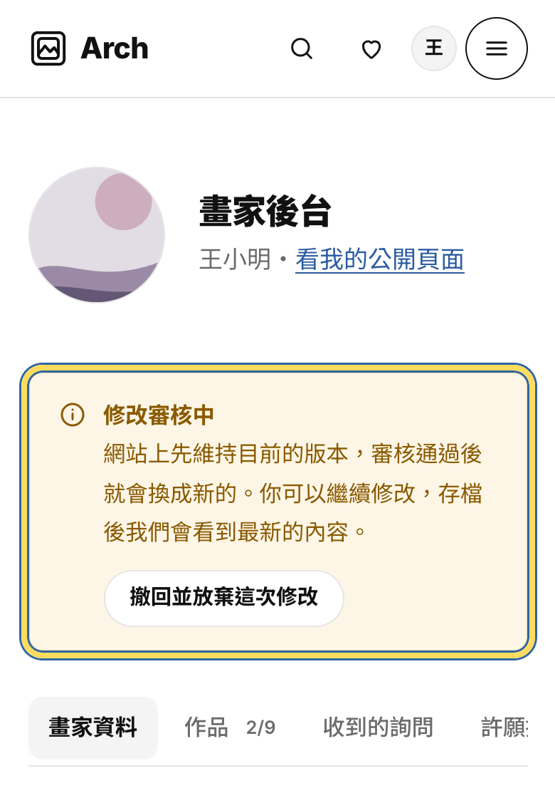
分清楚右上角「我的帳號」裡的「個人資料」只能改帳號的顯示名稱，跟畫家頁上的名字是分開的。畫家頁的資料一律在「畫家後台」修改。